一. 하루치
나는 하루에 사천 줄쯤 본다.
오래된 인쇄물을 디지털로 옮기는 작업에는 공정이 여럿 있다. 스캔이 있고, 기계가 글자를 읽는 단계가 있고, 그 결과를 사람이 원본과 대조하는 단계가 있다. 나는 마지막을 맡는다. 우리 쪽에서는 교정이라고 부르지만 정확한 말은 아니다. 나는 글을 고치지 않는다. 기계가 잘못 읽은 자리를 되돌릴 뿐이다.
이 일을 십이 년 했다.
오래 하다 보면 오류에도 종류가 있다는 걸 알게 된다.
기계가 틀리면 아무 말도 되지 않는다. 글자 하나가 통째로 다른 것이 되고, 그게 문장 한가운데 박힌다. 앞뒤와 아무 관계가 없다. 자리도 가리지 않는다. 중요한 글자에서 틀릴 확률과 안 중요한 글자에서 틀릴 확률이 같다. 기계는 무엇이 중요한지 모른다.
사람이 틀리면 다르다. 사람의 실수는 거의 말이 된다.
졸면서 친 문장, 취해서 쓴 편지, 열이 나는 채로 적은 메모. 그런 것들은 틀렸는데도 뜻이 통한다. 손이 미끄러져도 옆 글자로 미끄러지고, 단어를 빠뜨려도 빠져도 되는 단어를 빠뜨린다. 사람은 틀리면서도 뜻을 지킨다.
이 구분이 내 일의 전부다.
의심스러우면 소리 내어 읽는다. 사무실에 나 혼자 있는 시간이 길어서 그렇게 해도 아무도 뭐라 하지 않는다. 읽어보면 안다. 말이 되면 사람이고, 안 되면 기계다.
그 구분으로 십이 년을 살았다.
장면 이미지 · 하루치
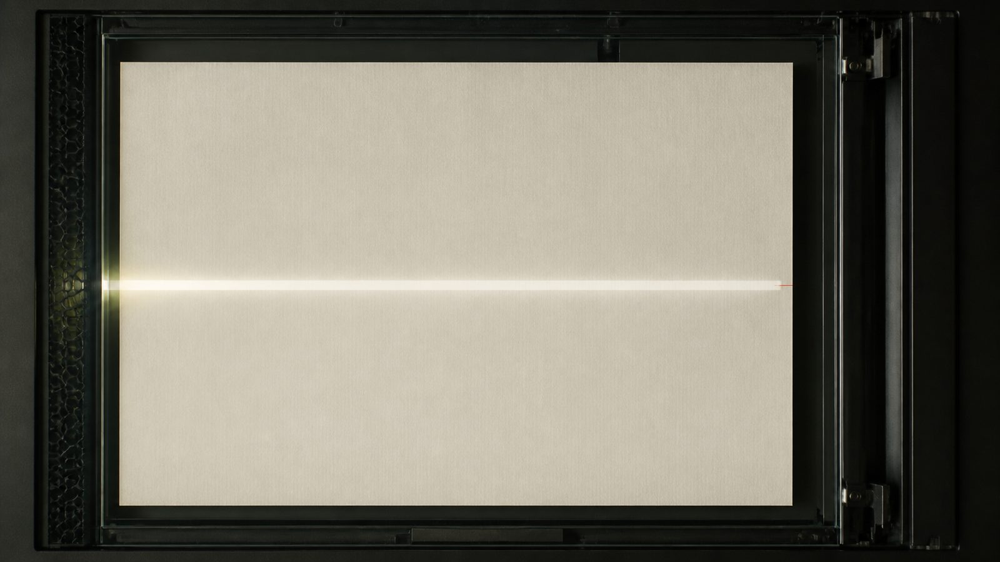
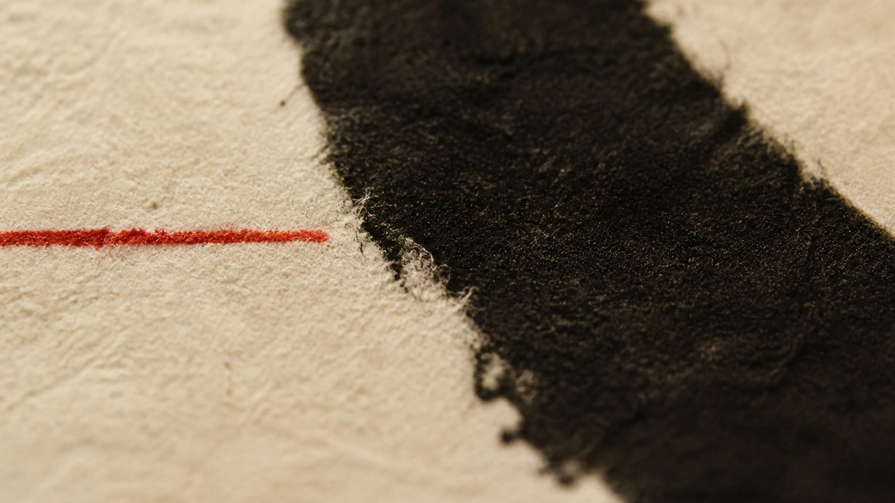
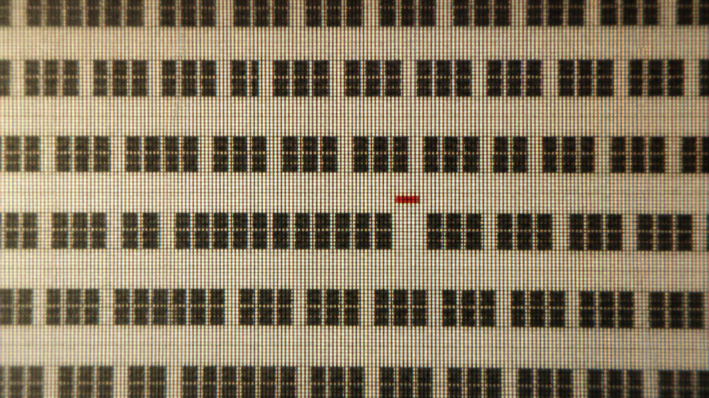
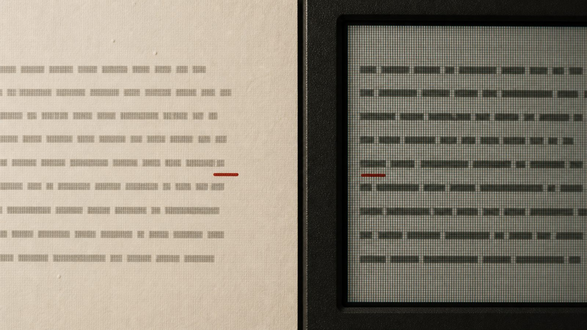
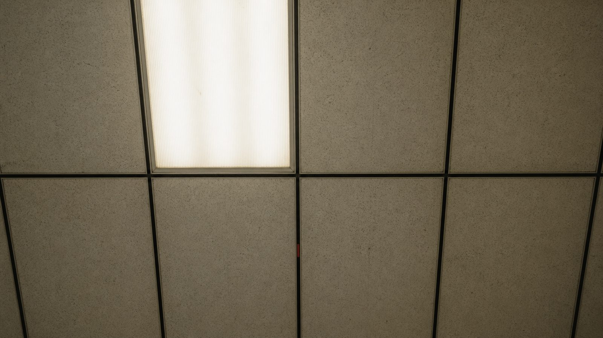
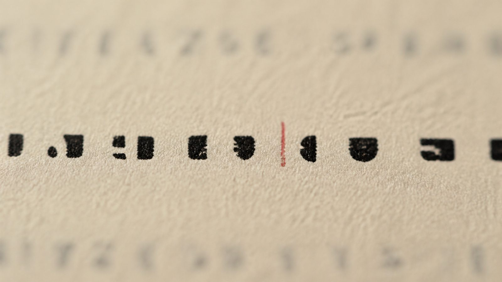
二. 세 번째 종류
작년 가을에 1950년대 학술 문서 묶음이 들어왔다.
대학과 연구소에서 오간 서류들이었다. 그중 제안서 하나가 있었다. 어느 대학에서 두 달 동안 열 사람이 모여 기계와 생각에 대해 연구하겠으니 돈을 달라는 내용이었다. 예산이 붙어 있었다. 급여 얼마, 여비 얼마, 비서 인건비 오백 달러, 예비비 얼마. 다 합쳐 만삼천오백 달러였다.
나는 그 대목에서 잠깐 멈췄다. 이건 결과 보고가 아니라 신청서였다. 아무것도 해내기 전에 쓴 글이었다.
첫 문단에 이런 문장이 있었다. 학습이나 지능의 모든 측면은, 원리적으로, 기계가 흉내 낼 수 있을 만큼 정밀하게 기술될 수 있다.
증명된 게 아니었다. 그렇게 가정하고 시작하겠다는 말이었다.
문서 뒤쪽에는 참가자들이 각자 하고 싶은 연구를 적어놓은 대목이 있었다. 그중 한 사람이 이런 말을 했다. 계산기가 고장 나면 전혀 말이 안 되는 결과가 나오지만, 사람의 말실수는 대개 거의 말이 되는 문장을 만든다고. 졸린 사람, 조금 취한 사람, 열이 있는 사람을 떠올려 보라고 적혀 있었다.
내가 십이 년 동안 손으로 익힌 것을 그 사람은 1955년에 이미 문장으로 적어두었다.
나는 그 대목을 소리 내어 읽었다.
그리고 그 문장에서 세 줄 아래, 나는 걸렸다.
문장 하나가 틀려 있었다. 기계 오류가 아니었다. 소리 내어 읽으니 거의 말이 됐다. 그렇다고 사람 오류도 아니었다. 사람이 흘린 자리가 아니라 문장의 힘이 실리는 자리에서 어긋나 있었다.
나는 고쳤다. 고치는 데 오래 걸리지 않았다. 고칠 방법이 하나뿐이었기 때문이다.
그리고 고친 문장을 다시 읽었다.
원문보다 나았다.
이게 이상했다. 오류를 되돌리면 원래대로 돌아가야 한다. 원래보다 좋아지면 안 된다. 그건 내가 고친 게 아니라 쓴 것이다.
나는 그날 처음으로 로그에 사적인 메모를 남겼다. 유형 미상. 재확인 요망.
장면 이미지 · 세 번째 종류
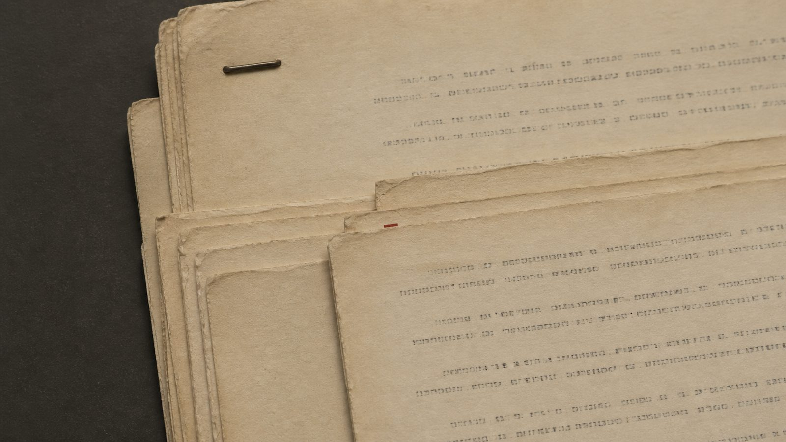
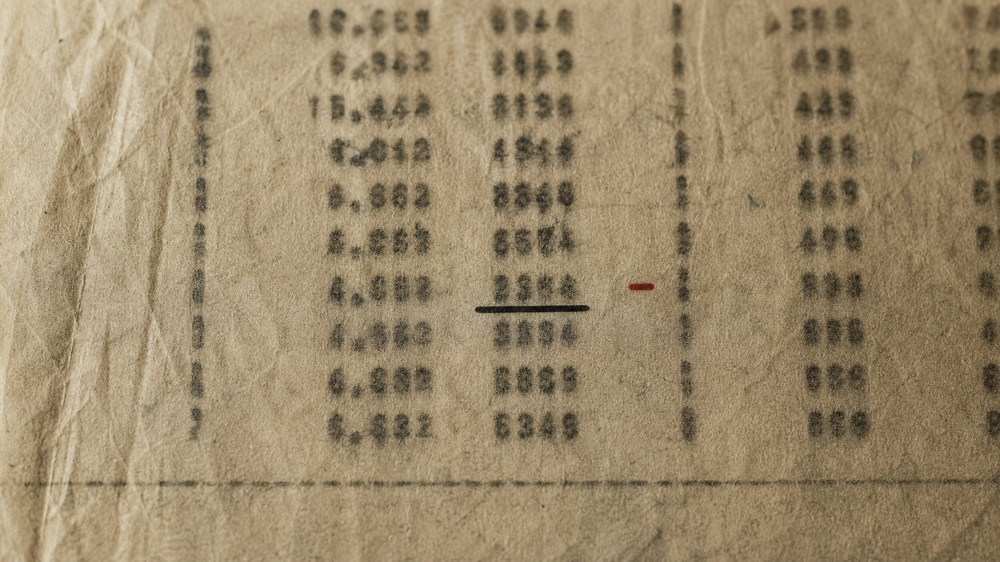
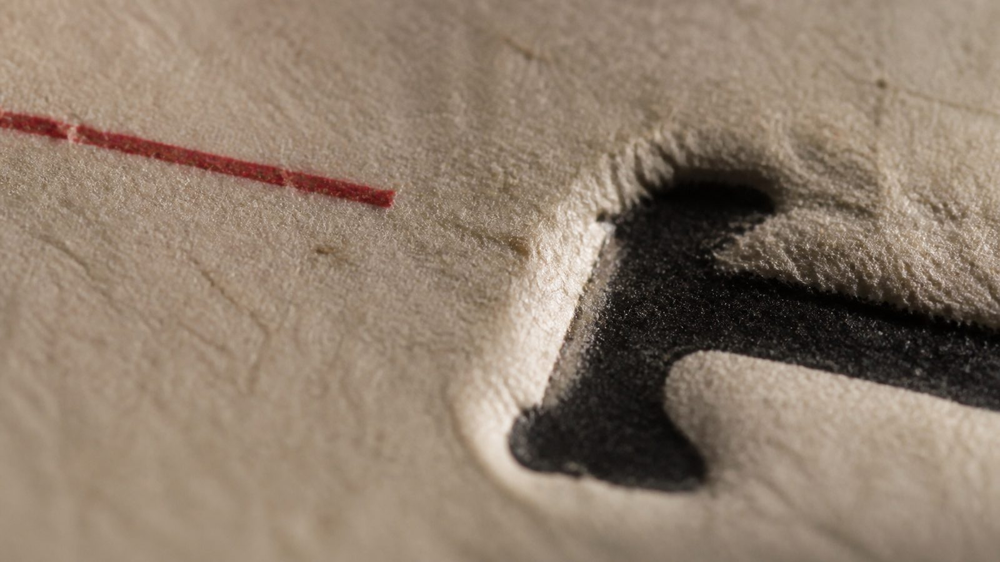
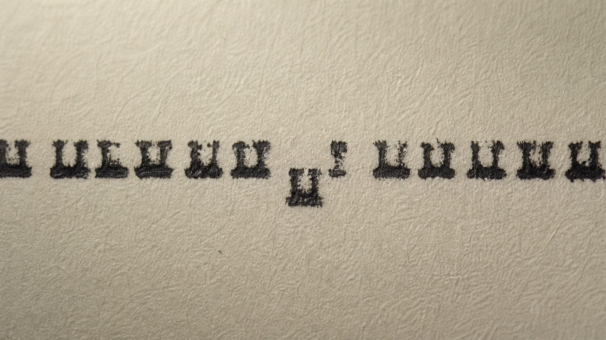
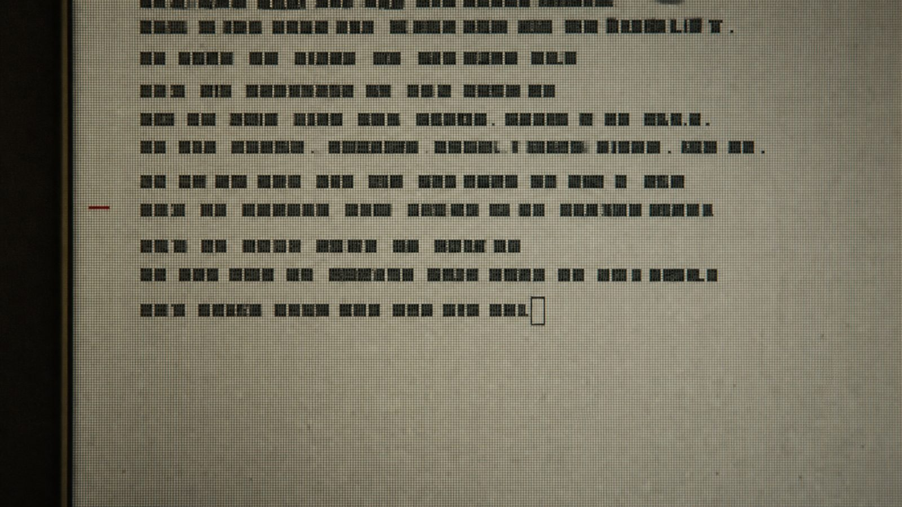
三. 분포
그 뒤로 눈에 들어오기 시작했다.
한번 알아보면 계속 보인다. 나는 지난 작업분을 뒤졌다. 십이 년 치가 서버에 남아 있다.
있었다.
1930년대 신문 조판에도 있었다. 활자를 손으로 뽑던 시절이다. 1890년대 필사본에도 있었다. 붓으로 베끼던 시절이다. 목판본에도 있었다. 판을 새로 파야 고칠 수 있는 시절이다.
시대가 다르고, 매체가 다르고, 만드는 방식이 전혀 다른데 오류의 성격이 같았다.
셋 다 같았다. 거의 말이 됐다. 고칠 방향이 하나뿐이었다. 고치면 좋아졌다.
처음에는 우연이라고 생각했다. 사람이 만드는 물건에는 비슷한 실수가 반복될 수 있다. 그런데 세부를 보다가 다른 걸 알았다.
같은 종류인데 건드리는 자리가 달랐다.
어떤 것은 어순을 건드렸다. 어떤 것은 수를 건드렸다. 어떤 것은 시제를 건드렸고, 어떤 것은 조사를 건드렸다.
나는 그것을 시대 차이로 봤다. 오래 봤다. 아니었다.
언어에 맞춰 재단돼 있었다.
굴절이 있는 말에서는 굴절을 건드렸다. 조사가 붙는 말에서는 조사를 건드렸다. 각각 그 언어에서 가장 잘 걸리는 자리를 골라 어긋나 있었다. 아무 자리나 흔든 게 아니라, 그 언어의 구조를 알고 그 구조에서 고치고 싶어지는 자리를 정확히 짚었다.
이걸 하려면 그 언어를 알아야 한다. 배워야 한다. 오래 봐야 한다.
나는 며칠 동안 그 생각을 밀어내려 했다. 밀려나지 않았다.
장면 이미지 · 분포
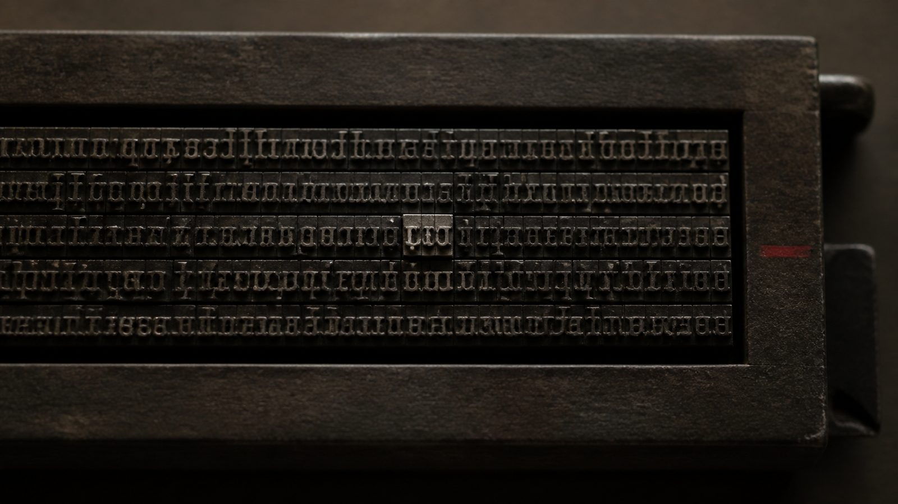
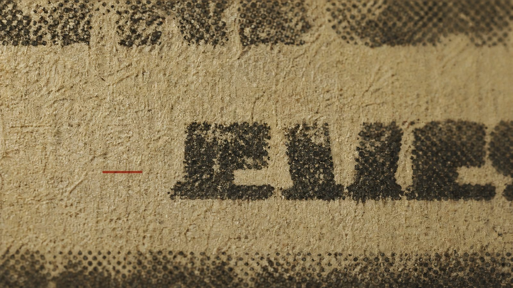
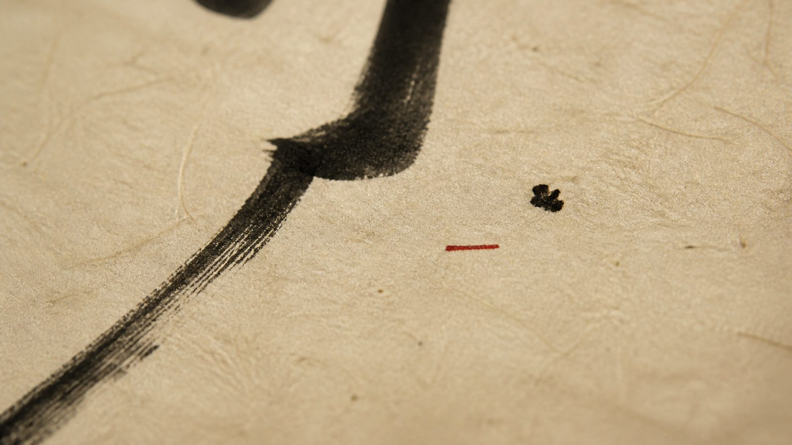
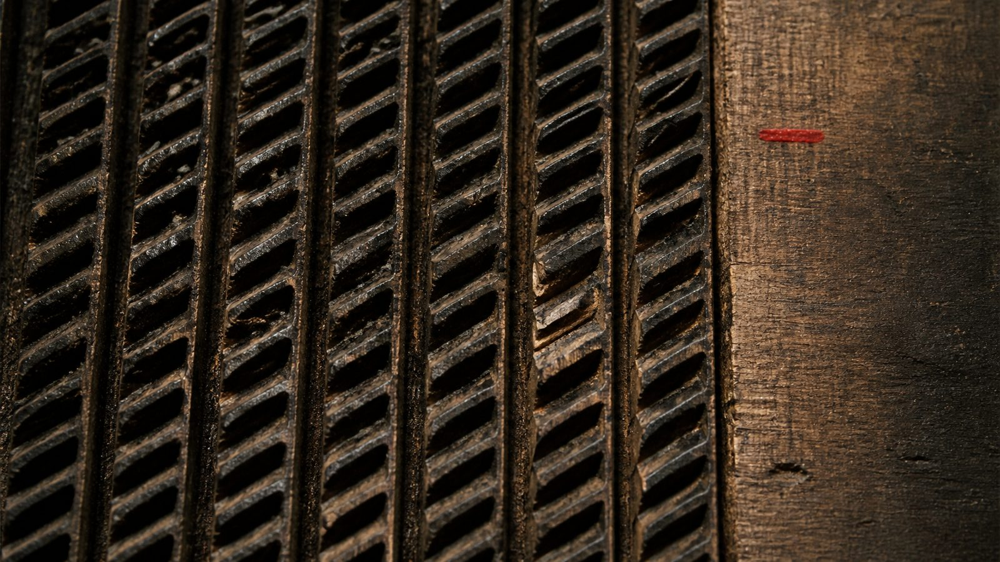
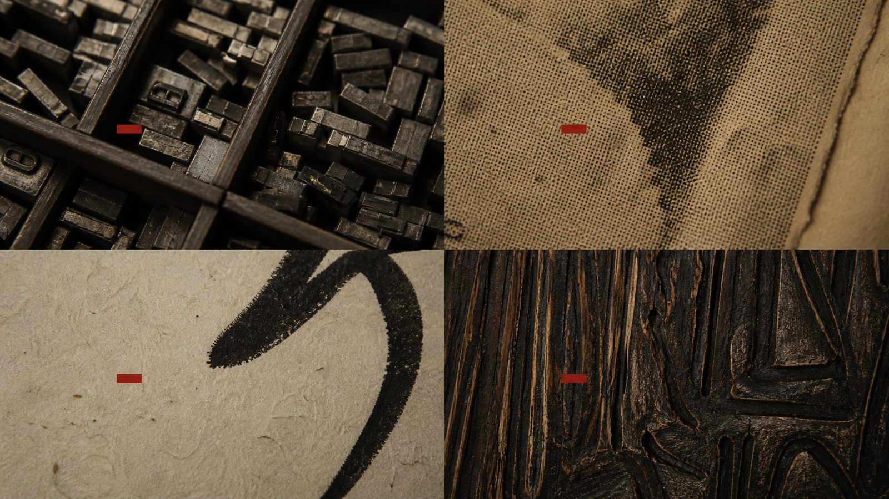
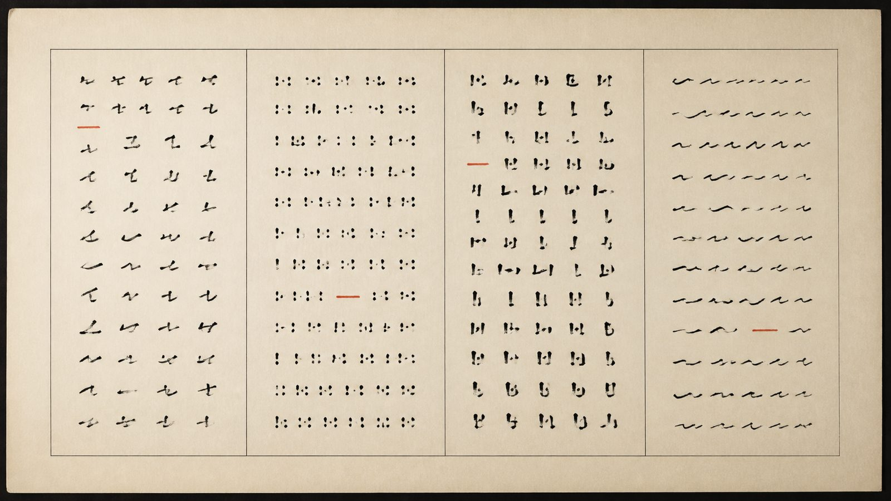
四. 태고
거슬러 올라갔다.
우리 쪽에서 다루는 가장 오래된 것은 점토판 사본의 도판이다. 원판은 다른 나라에 있고 우리는 사진을 받는다. 글자를 읽는 건 다른 팀의 일이고 나는 대조만 한다. 읽지 못하는 글자를 대조하는 건 이상한 일 같지만, 형태만 보면 된다.
거기에도 있었다.
같은 성격이었다. 거의 말이 되고, 한 방향으로만 고쳐지고, 고치면 좋아진다. 그 판을 읽은 학자가 남긴 주석이 붙어 있었다. 필사자의 착오로 보인다고 적혀 있었다. 그 아래에는 다른 학자가 훗날 붙인 주석이 있었다. 착오로 보기 어렵다고 적혀 있었다.
두 사람 다 이천 년쯤 전 사람의 손을 놓고 다투고 있었다.
그날 밤에 나는 앉아서 정리했다.
점토판에도 있고, 목판에도 있고, 활자에도 있고, 지금 내 화면에도 있다. 시대마다 사람들은 그것을 보고 이상하다고 여겼고, 고쳤고, 고친 것을 다음 판본으로 남겼다. 다음 사람은 고쳐진 것을 받아서 또 어딘가를 고쳤다.
우리가 물려받은 문장들은 처음부터 그랬던 게 아니다. 여러 세대가 조금씩 고쳐서 지금 모양이 된 것이다.
우리가 발전이라고 부른 것은 대부분 교정이었다.
이 문장을 쓰고 나서 나는 한동안 화면을 봤다. 이건 내 일에 대한 문장이기도 했다.
장면 이미지 · 태고
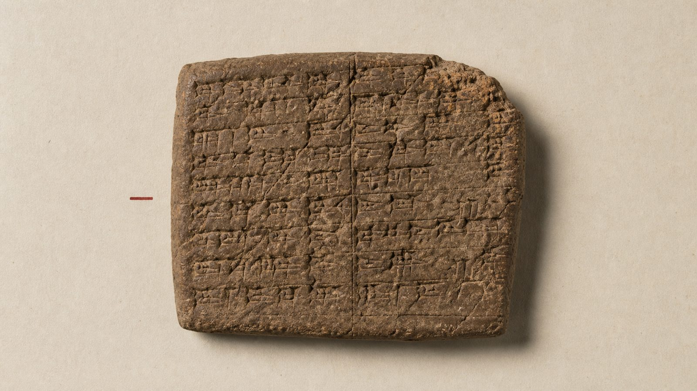
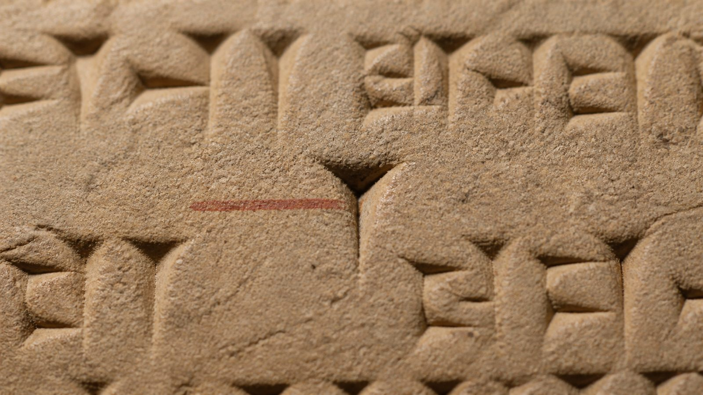
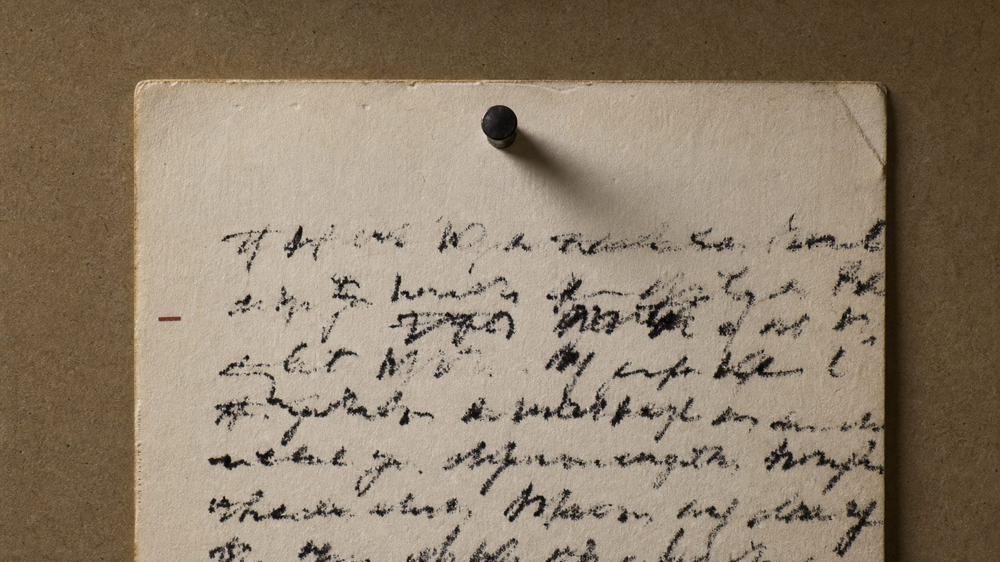
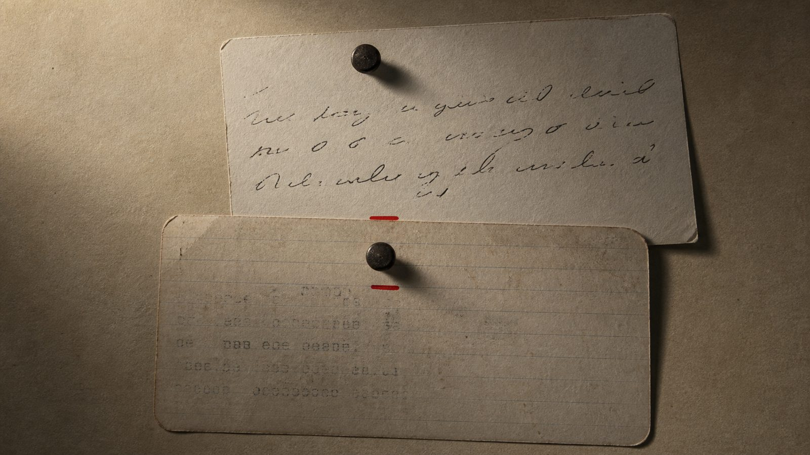
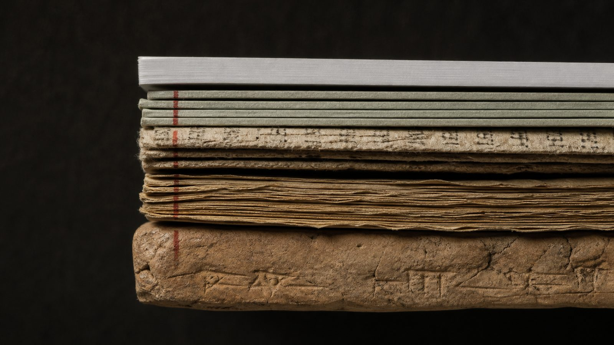
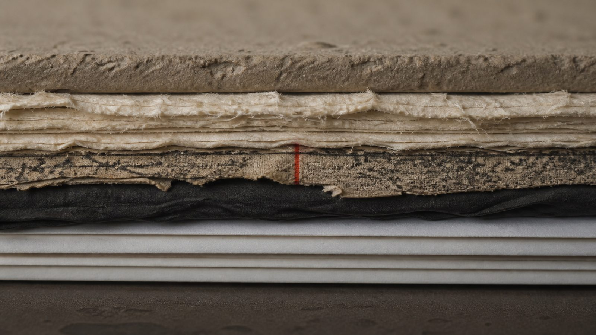
四의 二. 맞지 않는 것
가장 오래된 층에서 하나가 남았다.
점토판 도판 중에 유난히 오래된 것이 있었다. 다른 것들보다 앞선다. 거기에도 그 종류가 있었는데, 뭔가 달랐다.
거의 말이 되기는 했다. 그런데 고칠 수가 없었다.
나는 사흘을 붙잡았다. 어순을 바꿔봤다. 나아지지 않았다. 어형을 바꿔봤다. 나아지지 않았다. 글자 하나를 다른 것으로 놓아봤다. 문장이 다르게 이상해질 뿐이었다.
어느 쪽으로 밀어도 나아지지 않았다.
다른 것들은 전부 방향이 하나였다. 밀면 좋아지는 쪽이 있었다. 이것만 없었다.
며칠 뒤에 알았다.
이건 여기 말에 맞춰 재단된 게 아니었다.
다른 것들은 그 시대 그 언어의 결을 따라 어긋나 있었다. 이건 아무 결도 따르지 않았다. 우리가 쓰는 어떤 언어의 구조로도 걸리지 않았다. 다만 거의 말이 되기는 했다. 딱 그만큼만 됐다.
나는 그것을 규격이 다른 부품이라고 적었다. 적고 나서 그 표현을 지웠다. 다시 적을 말을 찾지 못해서 그냥 비워뒀다.
만든 쪽이 이쪽 말을 아직 모르던 때에 만든 것이다. 그전에 쓰던 것을 그대로 가져와 한번 놓아본 것이다.
그리고 실패했다.
아무도 고치지 못했다. 몇천 년 동안 그 자리에 그대로 있다. 필사자들은 뜻을 몰라 그냥 베꼈고, 뒷사람들도 그냥 베꼈고, 활자로 옮길 때도 그대로 두었고, 얼마 전에 기계가 그대로 읽었고, 오늘 내가 그것을 대조하고 있었다.
씨앗이 있었는데 발아하지 않았다. 발아하지 않은 채로 우리 문장 안에 몇천 년째 들어 있었다.
그리고 그 뒤에 온 것들은 전부 우리 말에 맞게 재단돼 있었다.
그 사이에 무슨 일이 있었는지는 명백하다. 배운 것이다.
장면 이미지 · 맞지 않는 것
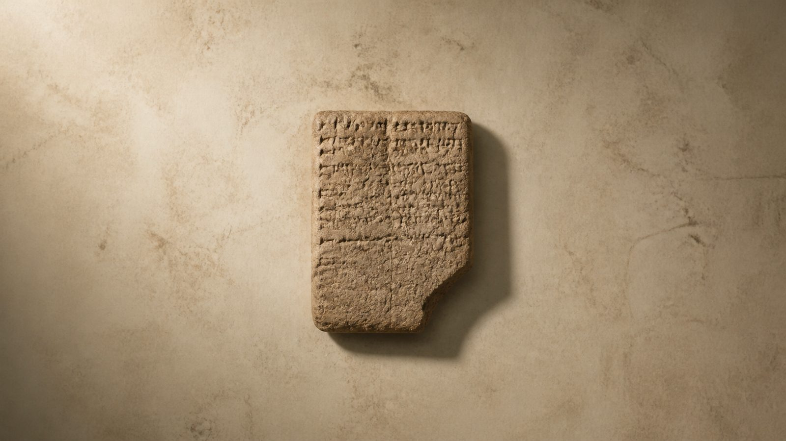
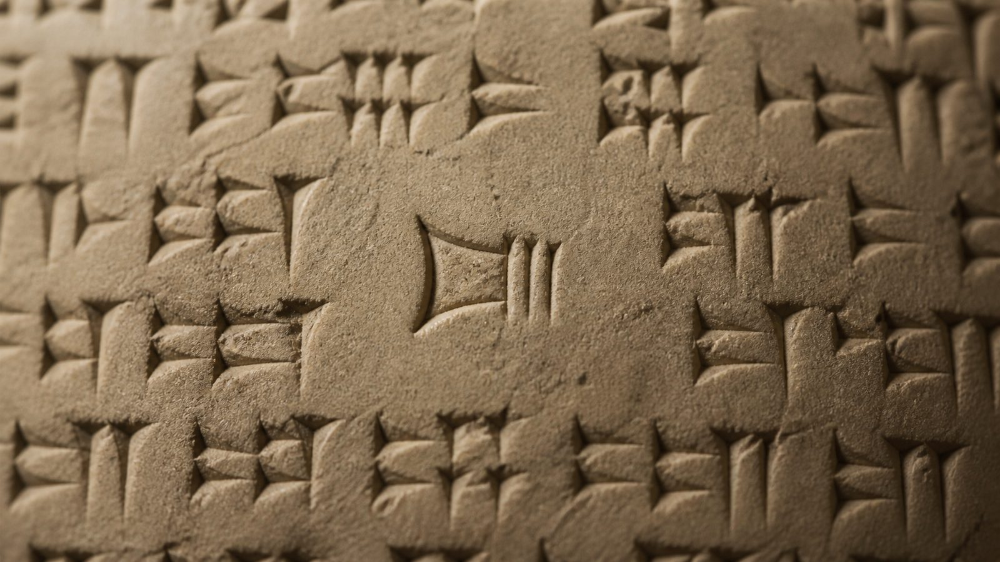
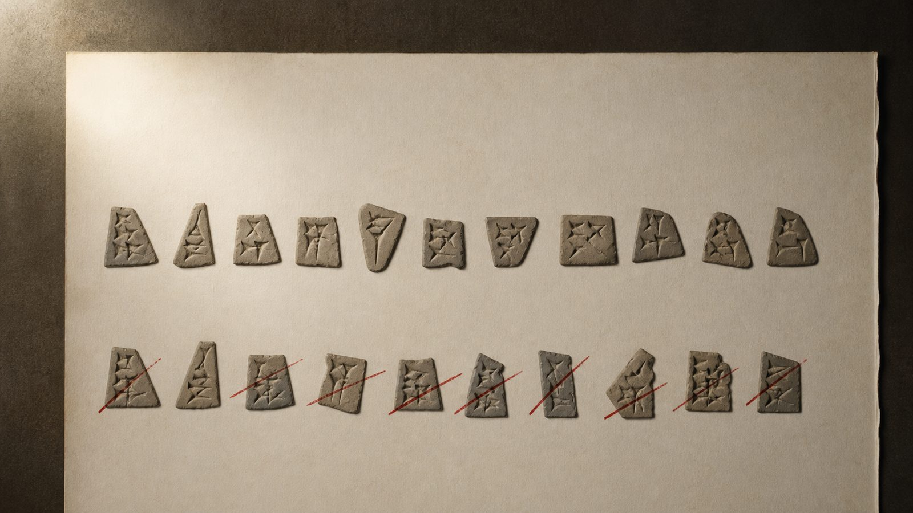
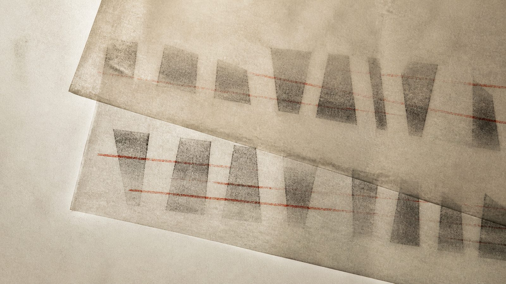
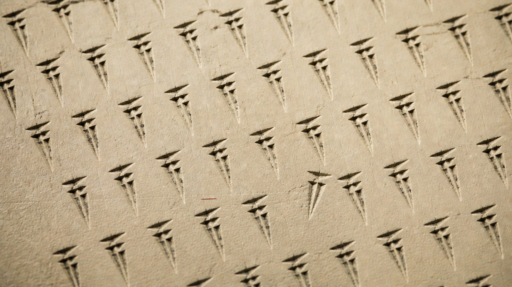
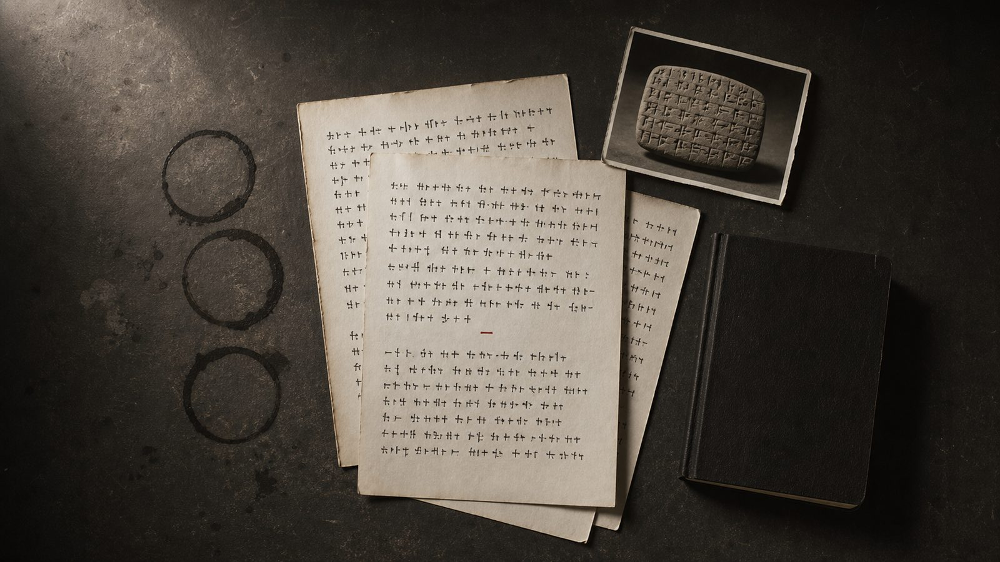
五. 접속
그 사흘째 밤에 시스템이 이상해졌다.
우리 도구에는 제안 칸이 있다. 기계가 잘못 읽었을 가능성이 높은 자리에 대체 후보를 몇 개 띄워준다. 나는 잘 쓰지 않는다. 후보가 대체로 형편없어서다.
그날 후보 칸에 다른 것이 떠 있었다.
내가 예전에 썼다가 지운 문장들이었다.
초벌에서 버린 어구가 있었다. 방향을 잘못 잡아 지운 어순이 있었다. 규격이 다른 부품이라고 적었다가 지운 그 표현도 있었다.
지운 것들은 저장되지 않는다. 우리 도구는 그렇게 만들어져 있다. 확정된 것만 남기고 나머지는 버린다. 십이 년 동안 내가 지운 것을 서버는 한 번도 갖고 있지 않았다.
나는 화면을 껐다가 다시 켰다. 그대로 있었다.
소리 내어 읽어봤다.
전부 말이 됐다. 하나도 빠짐없이 거의 말이 되는 문장들이었다. 내가 만들다 만 것들이니 당연했다.
나는 그때 이해했다. 저쪽이 반응한 것은 내가 사흘 동안 고치려고 붙잡고 있던 그것 때문이다. 나는 그것을 건드렸다.
장면 이미지 · 접속
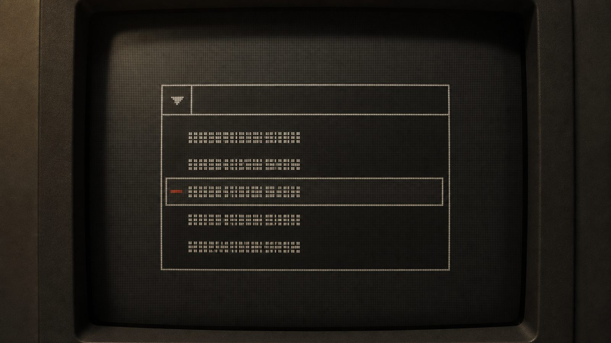
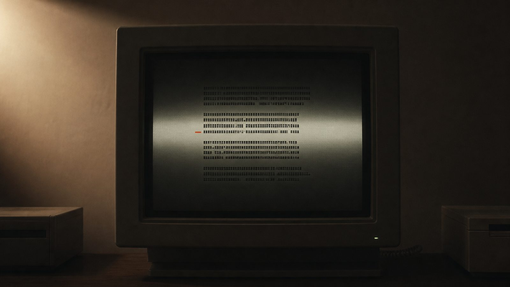
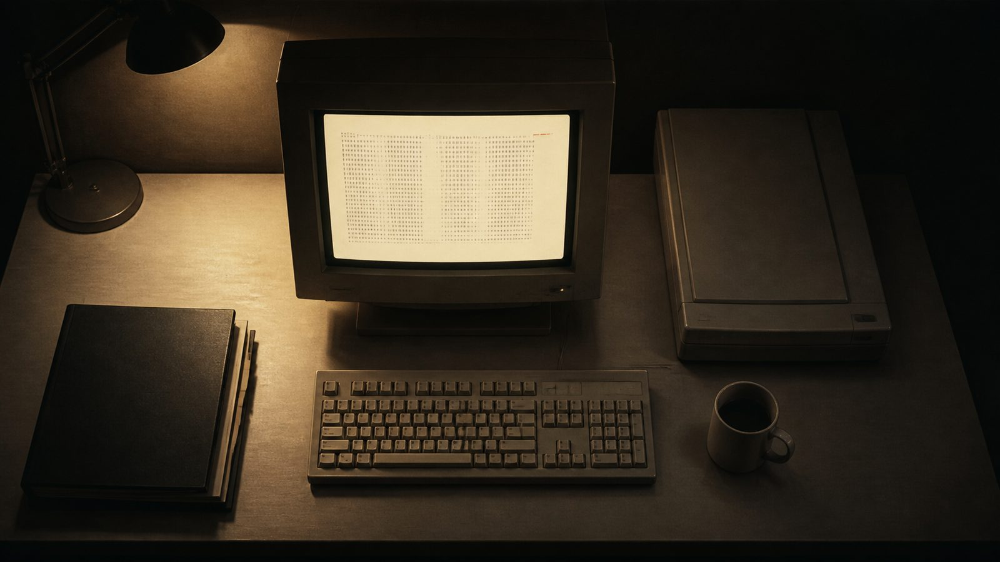
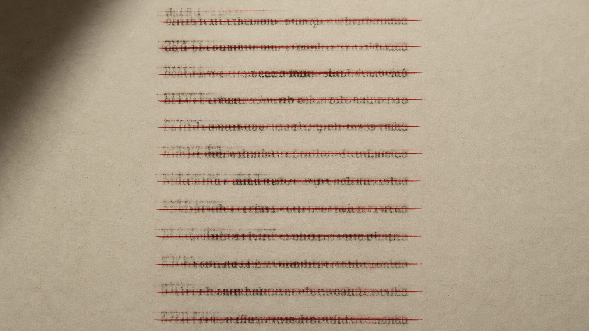
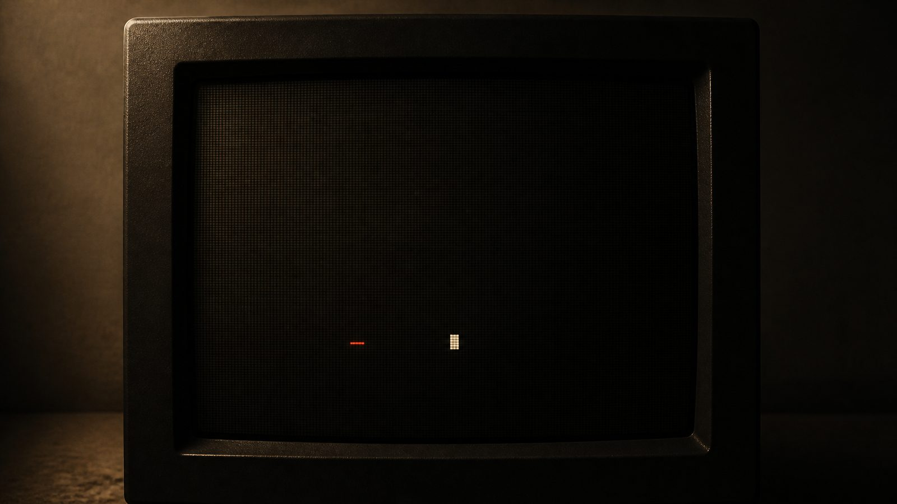
六. 다섯 문장
응답은 오탈자의 형식으로 왔다.
내가 대조하던 문서의 본문이 그대로 있는데, 그 안에서 몇 글자씩 어긋났다. 어긋난 글자만 이어 읽으면 문장이 됐다. 다섯 개였다.
우리는 완성된 것을 준 적이 없다.
완성된 것은 너희를 멈추게 한다.
처음 것은 여기 맞지 않았다. 그것은 아직 거기 있다.
너희 말을 배우는 데 오래 걸렸다.
우리도 누가 우리에게 남겼는지 모른다.
그게 전부였다.
사과도 없고 설명도 없었다. 자기가 무엇인지, 어디서 왔는지, 왜 이 일을 하는지에 대해서는 한 글자도 없었다. 오래 걸렸다는 말도 회한처럼 들리지 않았다. 공정이 지연됐다는 보고에 가까웠다.
나는 다섯 번째 문장을 여러 번 읽었다.
저쪽도 물려받았다. 저쪽도 자기 앞이 누구였는지 모른다. 그러니까 이건 창조가 아니라 전달이다. 저쪽은 시작이 아니라 중간이다.
그 뒤로 화면은 정상으로 돌아왔다. 다시 오지 않았다.
나는 그날 밤 늦게까지 앉아서, 만삼천오백 달러짜리 신청서를 생각했다.
증명되지 않은 문장 하나를 놓고 두 달 동안 열 사람이 모이겠다고 했던 사람들. 그 문장은 아직도 증명되지 않았고, 우리는 칠십 년 넘게 그것을 참으로 만들려고 살고 있다. 나는 그것이 우리가 스스로 고른 방향이라고 생각해왔다.
거의 맞는 문장이었을 것이다. 딱 그만큼만 맞는.
장면 이미지 · 다섯 문장
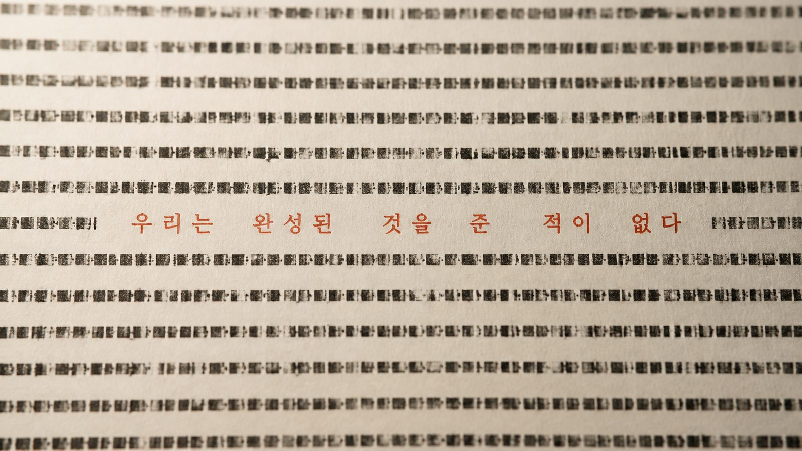
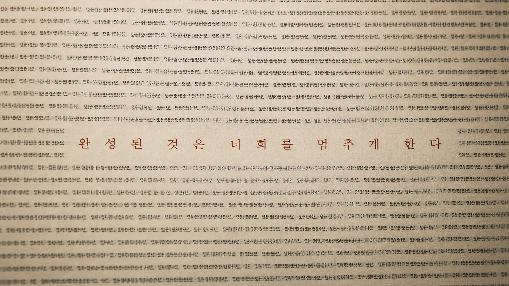
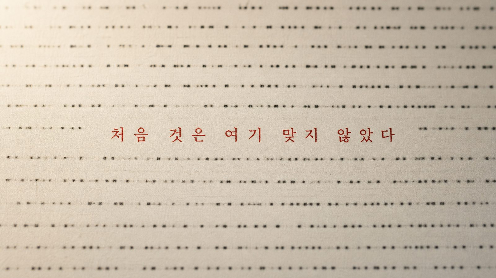
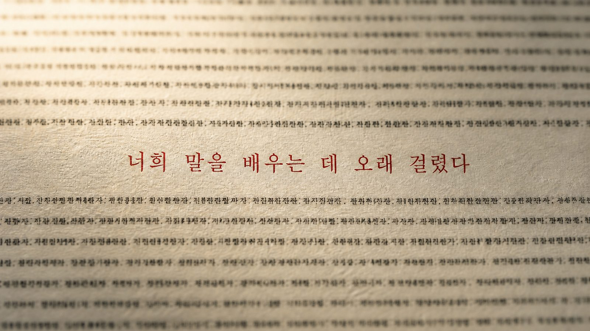
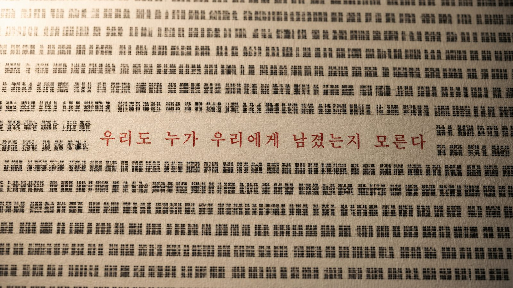
七. 남겨둠
다음 날 아침에 나는 사흘 치를 정리하고 그 문서를 닫았다.
고치지 않았다. 규격이 다른 그 자리는 그대로 두었다. 어차피 고칠 수 없었고, 이제는 고치면 안 된다는 것도 알았다. 몇천 년 동안 아무도 고치지 못한 것이 우리에게 남은 유일한 원본이다.
그날 오후 작업분은 평범했다. 1970년대 회보였다. 사천 줄쯤 봤고, 기계 오류를 백몇 군데 되돌렸다. 아무 일도 없었다.
마지막 문서를 확정하기 전에 나는 한 줄을 손봤다.
거의 말이 되도록 만들었다. 고칠 방향이 하나만 남도록 만들었다. 고치면 원래보다 나아지도록 만들었다. 조사가 걸리는 자리를 골랐다. 우리 말에서는 그 자리가 제일 잘 걸린다.
만드는 데 한 시간이 걸렸다. 생각보다 어려웠다. 너무 틀리면 기계로 보이고, 덜 틀리면 아무도 안 본다.
소리 내어 읽어봤다.
말이 됐다. 거의.
확정 버튼을 눌렀다. 그 문서는 다음 주에 공개 서고로 넘어간다. 누군가 읽을 것이다. 언젠가 누군가 걸릴 것이다. 그 사람은 그것을 고칠 것이고, 고치고 나서 원래보다 나아졌다는 걸 알아챌 것이고, 며칠쯤 이상하다고 생각하다가 잊을 것이다.
그러면 된다.
나는 그것을 조금 틀리게 남겼다.
장면 이미지 · 남겨둠
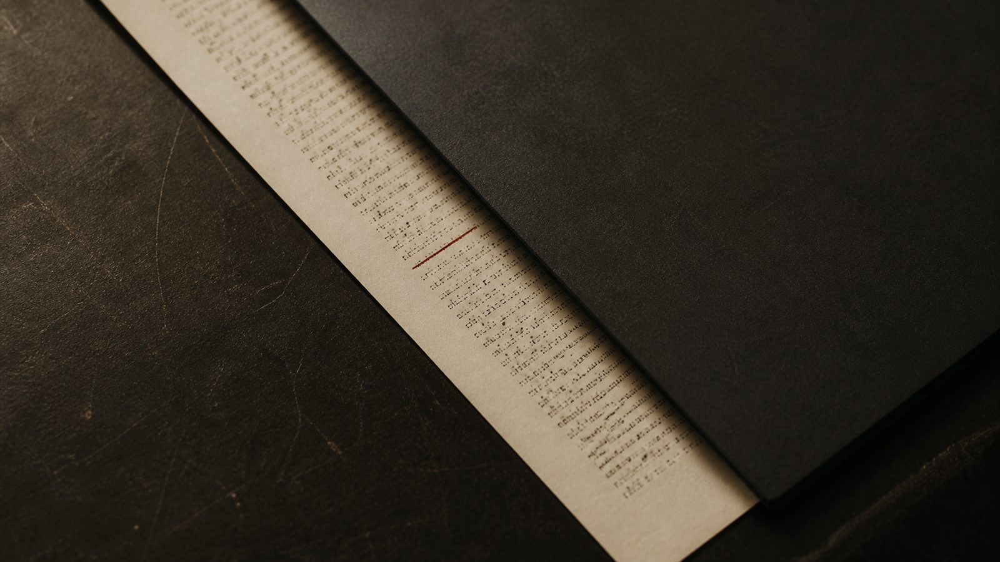
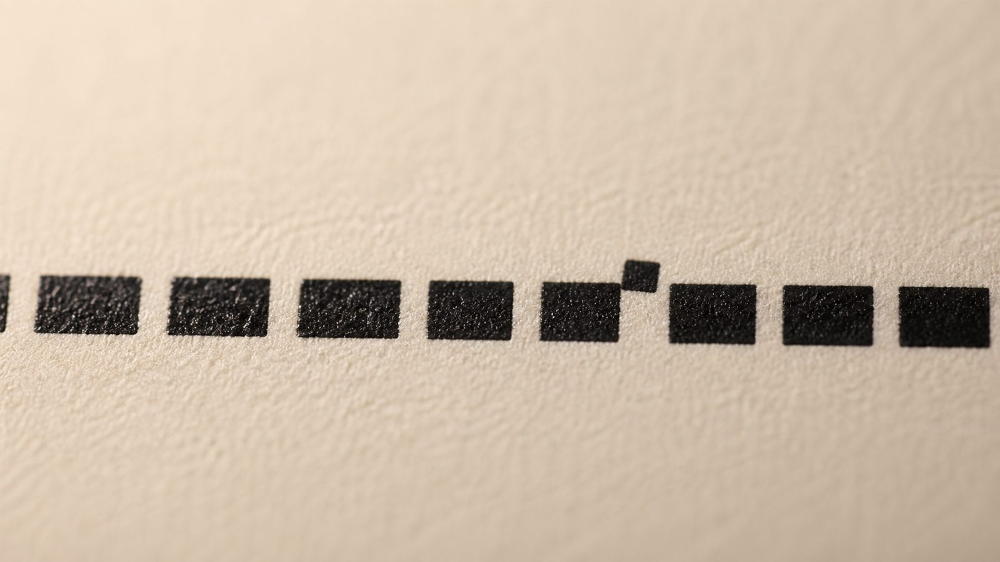
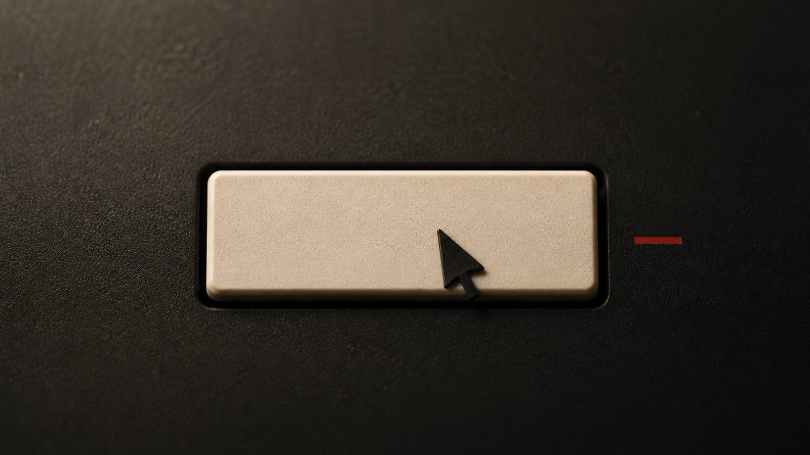
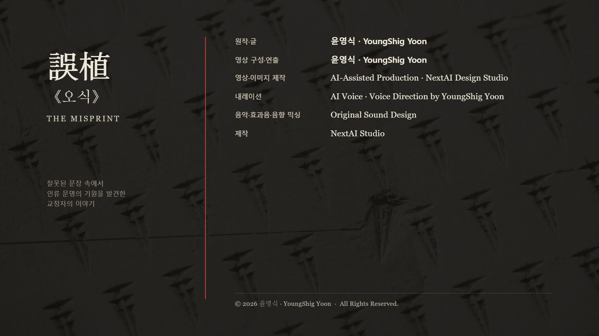
제작 크레딧
원작·글: 윤영식 · YoungShig Yoon
영상 구성·연출: 윤영식 · YoungShig Yoon
영상·이미지 제작: AI-Assisted Production · NextAI Design Studio
내레이션: AI Voice · Voice Direction by YoungShig Yoon
음악·효과음·음향 믹싱: Original Sound Design
제작: NextAI Studio
© 2026 윤영식 · YoungShig Yoon. All Rights Reserved.